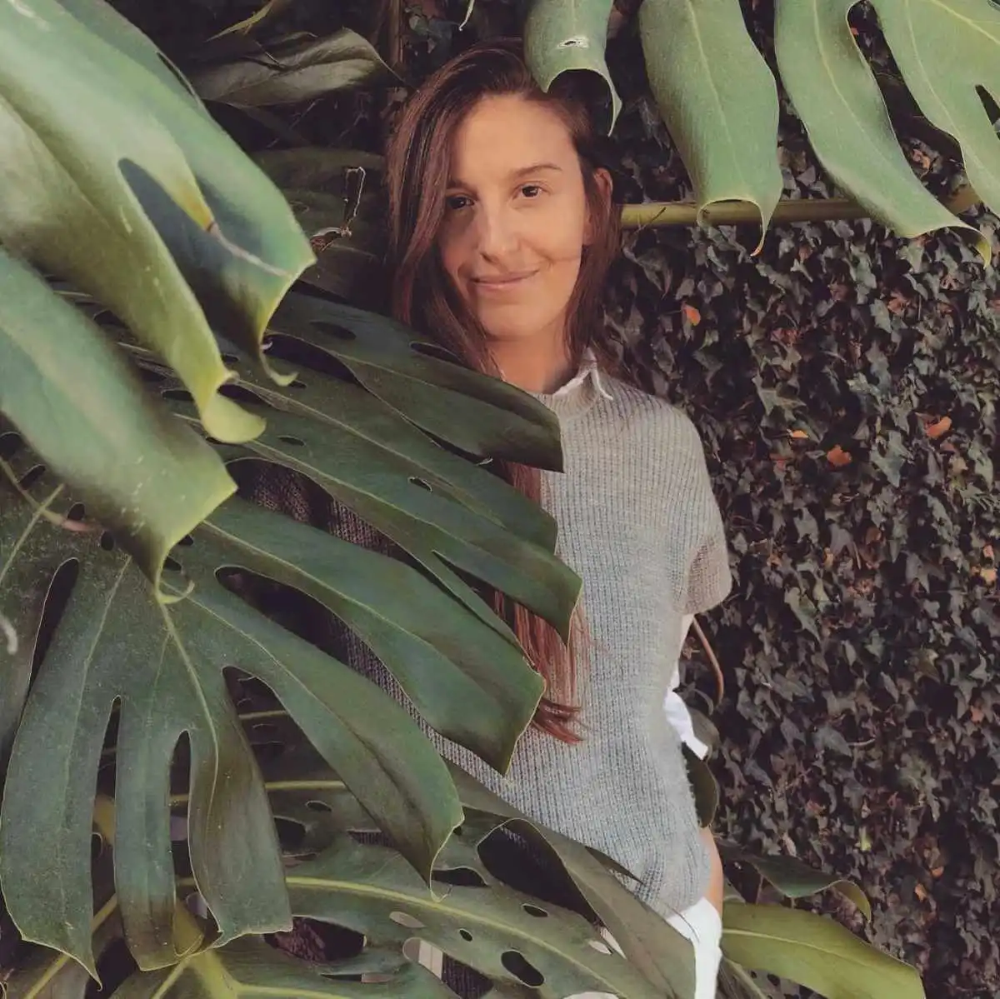

Camila Malumbres
Nació el 5 de mayo de 1993 en Rosario del Tala, provincia de Entre Ríos, Argentina.
Como psicóloga especializada en psicoanálisis, encuentra inspiración en los misterios de la mente y las emociones humanas.
Su escritura refleja una profunda sensibilidad hacia la complejidad de la existencia
De risa fuerte y lágrima fácil, escribe con el corazón en la mano y convierte las palabras en música para el alma.
Aunque siempre estuvo arraigada en la tierra que la vio nacer, disfruta de viajar y explorar nuevos horizontes, especialmente el mar y las montañas.
El campo donde creció su abuelo es su lugar favorito en el mundo, y el cielo su inspiración.
En 2021, Camila publicó su primer libro, "Los que no piden permiso", una obra que captura su espíritu libre y su compromiso con la verdad.
A través de sus palabras, nos invita a explorar nuestras emociones más profundas y a encontrar el valor para ser fieles a nosotros mismos.